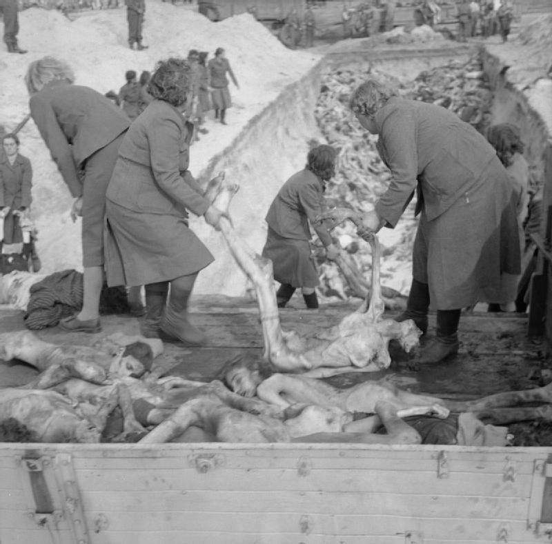

Victime și crime de război
Estimările numărului total de victime ale războiului sunt diferite, deoarece multe decese au rămas neînregistrate. Cele mai multe sugerează că au murit aproximativ 60 de milioane de oameni în război, dintre care aproximativ 20 de milioane de militari și 40 de milioane de civili.Mulți dintre civili au murit din cauza genocidelor deliberate, a masacrelor, bombardamentelor masive, a bolilor și foametei. Uniunea Sovietică a pierdut aproximativ 27 de milioane de oameni în timpul războiului,dintre care 8,7 milioane de militari și 19 milioane de civili morți. Cea mai mare parte din militarii morți au fost 5,7 milioane de etnici ruși, urmat de 1,3 milioane de etnici ucraineni.Un sfert din populația Uniunii Sovietice a fost rănită sau ucisă. Germania a suferit pierderea a 5,3 milioane de oameni în luptă, mai ales pe Frontul de Est și în timpul ultimei bătălii din Germania. Din numărul total de decese în al Doilea Război Mondial, aproximativ 85%—cea mai mare parte sovietici și chinezi—au fost de partea Aliaților și 15% au fost de partea Axei. Multe dintre aceste decese au fost cauzate de crime de război comise de forțele germane și de cele japoneze în teritoriile ocupate. Între 11 și 17 milioane de civili au murit ca urmare, fie directăm fie indirectă, a politicilor ideologice naziste, intre care genocidul sistematic a aproximativ 6 milioane de evrei în Holocaust, împreună cu încă 5 până la 6 milioane de etnici polonezi și alți slavi (inclusiv ucraineni și belaruși)—romi, homosexuali, și alte grupuri etnice și minoritare. Sute de mii (estimări diferite) de etnici sârbi, împreună cu romi și evrei, au fost uciși de Ustașii aliniați cu Axa în Iugoslavia,iar după ce s-a încheiat războiul s-au comis și crime de răzbunare.
În Asia și Pacific, între 3 milioane și peste 10 milioane de civili, cea mai mare parte chinezi (circa 7,5 milioane), au fost uciși de către forțele de ocupație japoneze.Cea mai cunoscută atrocitate japoneză a fost masacrul de la Nanking, în care între cincizeci și trei sute de mii de civili chinezi au fost violați și uciși.Mitsuyoshi Himeta a raportat că Sankō Sakusen a făcut 2,7 milioane de victime. Generalul Yasuji Okamura a pus această politică în aplicare în Heipei și Shantung.
Forțele Axei au utilizat arme biologice și chimice. Armata Imperială Japoneză a folosit diverse astfel de arme în timpul invaziei și ocupației Chinei (vezi Unitatea 731)și la începutul conflictelor cu sovieticii.Atât germanii, cât și japonezii au testat astfel de arme împotriva civililor și, uneori, pe prizonierii de război.
Uniunea Sovietică a fost responsabilă pentru masacrul de la Katyn a 22.000 de ofițeri polonezi,și cu încarcerarea sau executarea a mii de deținuți politici de către NKVD,în statele Baltice, Polonia de est, și Basarabia ocupate de către Armata Roșie. Bombardarea masivă a zonelor civile, în special în orașele Varșovia, Rotterdam și Londra; inclusiv atacurile aeriene asupra spitalelor și a refugiaților de către aviația germană, împreună cu bombardarea orașului Tokyo, și a orașelor germane Dresda, Hamburg și Köln de către Aliații Occidentali pot fi considerate crime de război. Acestea din urmă au dus la distrugerea a peste 160 de orașe și la moartea a peste 600.000 de civili germani. Cu toate acestea, la acea dată nu exista nicio legislație internațională umanitară explicită sau măcar cutumiară cu privire la războiul aerian.
Lagărele de concentrare, munca forțată și genocidele
Guvernul german condus de Adolf Hitler și de Partidul Nazist a fost responsabil pentru Holocaust, uciderea a aproximativ 6 milioane de evrei, precum și a 2,7 milioane de etnici polonezi,și a 4 milioane de oameni care erau considerați „nedemni de viață” (inclusiv persoane cu handicap și bolnavi mintal, prizonieri de război sovietici, homosexuali, masoni, martori ai lui Iehova, si romi) ca parte dintr-un program deliberat de exterminare. Aproximativ 12 milioane de oameni, dintre care majoritatea erau est-europeni, au fost folosiți în economia de război germană ca sclavi.
 În plus față de lagărele de concentrare naziste, gulagurile (lagărele de muncă) sovietice a dus la moartea multor cetățeni din țările ocupate, cum ar fi Polonia, Lituania, Letonia, și Estonia, precum și a prizonierilor de război germani și chiar a unor cetățeni sovietici care erau suspectați a fi susținători ai naziștilor.Șaizeci la sută dintre prizonierii de război sovietici luați de germani au murit în timpul războiului.Richard Overy dă un număr de 5,7 milioane de prizonieri sovietici. Din aceștia, 57% au murit sau au fost uciși, un total de 3,6 milioane.Foștii prizonieri de război și civili repatriați sovietici au fost tratați cu mare suspiciune ca potențiali colaboratori ai naziștilor, iar unii dintre ei au fost trimiși în Gulag după ce au fost verificați de către NKVD.